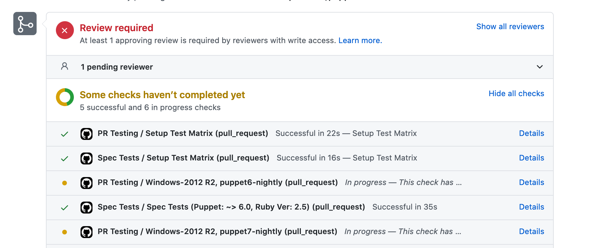

Contributing to Supported Modules
So you want to contribute to a Puppet module: Great! Below are some instructions to get you started doing that very thing while setting expectations around code quality as well as a few tips for making the process as easy as possible.
Although our reviews don’t catch everything, this is final defense line for anything our automated tests cannot catch.
Getting Started
-
Fork the module repository on GitHub and clone to your workspace
-
Make your changes!
Commit Checklist
The PR Title
Our CHANGELOGs when releasing are automated and to do this, we make use of the PR title. This means that it is super important that your PR title always reflects the changes contained within the PR. Anything you think would be useful for an end user to know should be included.
The Basics
-
my commit is a single logical unit of work
-
I have checked for unnecessary whitespace with “git diff –check”
-
my commit does not include commented out code or unneeded files
The Content
-
my commit includes tests for the bug I fixed or feature I added
-
my commit includes appropriate documentation changes if it is introducing a new feature or changing existing functionality
-
my code passes existing test suites
The Commit Message
-
the first line of my commit message includes:
-
an issue number (only if you feel applicable, no need for small PRs to correct typos etc.), e.g. “(MODULES-xxxx) This is the first line”
-
a short description (50 characters is the soft limit, excluding ticket number(s))
-
-
the body of my commit message:
-
is meaningful
-
uses the imperative, present tense: “change”, not “changed” or “changes”
-
includes motivation for the change, and contrasts its implementation with the previous behavior
-
Submission
Pre-requisites
- Make sure you have a GitHub account
Push and PR
-
Push your changes to your fork
-
Open a Pull Request against the repository in the puppetlabs organization
More about commits
-
Make separate commits for logically separate changes.
Please break your commits down into logically consistent units which include new or changed tests relevant to the rest of the change. The goal of doing this is to make the diff easier to read for whoever is reviewing your code. In general, the easier your diff is to read, the more likely someone will be happy to review it and get it into the code base.
If you are going to refactor a piece of code, please do so as a separate commit from your feature or bug fix changes.
We also really appreciate changes that include tests to make sure the bug is not re-introduced, and that the feature is not accidentally broken.
Describe the technical detail of the change(s). If your description starts to get too long, that is a good sign that you probably need to split up your commit into more finely grained pieces.
Commits which plainly describe the things which help reviewers check the patch and future developers understand the code are much more likely to be merged in with a minimum of bike-shedding or requested changes. Ideally, the commit message would include information, and be in a form suitable for inclusion in the release notes for the version of Puppet that includes them.
Please also check that you are not introducing any trailing whitespace or other “whitespace errors”. You can do this by running “git diff –check” on your changes before you commit.
-
Sending your patches
To submit your changes via a GitHub pull request, we highly recommend that you have them on a topic branch, instead of directly on “main”. It makes things much easier to keep track of, especially if you decide to work on another thing before your first change is merged in.
GitHub has some pretty good general documentation on using their site. They also have documentation on creating pull requests.
In general, after pushing your topic branch up to your repository on GitHub, you can switch to the branch in the GitHub UI and click “Pull Request” towards the top of the page in order to open a pull request.
-
Update the related JIRA issue.
If there is a JIRA issue associated with the change you submitted, then you should update the ticket to include the location of your branch, along with any other commentary you may wish to make.
More in-depth information on Contributing
Thanks to Ceora, she has put together a great article on ‘How to Make Your First Open Source Contribution’. The information she has included is fantastic and if you want more in-depth information it is definitely the perfect place to start.
Testing
Getting Started
Our Puppet modules provide a Gemfile in the module root directory, we can then use the pdk to install all of the Gems listed in the Gemfile.
which can tell a Ruby package manager such as bundler what Ruby packages or gems, are required to build, develop, and test this software.
Please make sure you have the pdk on your system, and then use it to install all dependencies needed for this project in the project root by running
% pdk bundle install
Fetching gem metadata from https://rubygems.org/........
Fetching gem metadata from https://rubygems.org/..
Using rake (10.1.0)
Using builder (3.2.2)
-- 8><-- many more --><8 --
Using rspec-system-puppet (2.2.0)
Using serverspec (0.6.3)
Using rspec-system-serverspec (1.0.0)
Using bundler (1.3.5)
Your bundle is complete!
Use `pdk bundle show [gemname]` to see where a bundled gem is installed.
NOTE: some systems may require you to run this command with sudo.
If you already have those gems installed, make sure they are up-to-date:
% pdk bundle update
Checking your PR automated test results
When you create a PR, our automated test suite will automatically pick up your changes and run tests against them. This will highlight and regressions that you change may have introduced.
How do I know the status of the automated tests?
At the bottom of your PR a breakdown of the automated tests running will be shown:

- A green tick (Tests have passed)
- A red cross (Tests have failed)
- A yellow dot (Tests are still running)
- A grey dot (The job has been cancelled)
A PR will not be merged with failing tests, if you click on the small red cross icon it will give you additional information on what has actually failed. Once this is addressed you can commit your fix and continue working. If your fix is difficult and you need to do additional debugging check out the section in this document called [Running tests on your local machine]((#running-tests-on-your-local-machine) as this will allow you to run interactive debugging sessions using pry.
Running Tests on your local machine
With all dependencies in place and up-to-date, run the tests:
Unit Tests
% pdk bundle exec rake spec
This executes all the rspec tests in the directories defined here and so on.
rspec tests may have the same kind of dependencies as the module they are testing. Although the module defines these dependencies in its metadata.json,
rspec tests define them in fixtures.yml. We use this over pdk test unit as it provides live feedback as the tests are running. See below:


Acceptance Tests
All Puppet Supported modules come with acceptance tests, which use puppet litmus. Litmus supports multiple provisioners, that exist in the provision module. For information on how you can run your tests using litmus please check out the litmus docs section
Writing Tests
Unit Tests
When writing unit tests for Puppet, rspec-puppet is your best friend. It provides tons of helper methods for testing your manifests against a catalog (e.g. contain_file, contain_package, with_params, etc). It would be ridiculous to try and top rspec-puppet’s documentation but here’s a tiny sample:
Sample manifest:
file { "a test file":
ensure => present,
path => "/etc/sample",
}
Sample test:
it 'does a thing' do
expect(subject).to contain_file("a test file").with({:path => "/etc/sample"})
end
Acceptance Tests
A common pattern for acceptance tests is to create a test manifest, apply it twice to check for idempotency or errors, then run expectations.
For more examples on how to write a test using litmus, please check out the tests in all of our supported modules and for more information about writing tests using litmus check out the litmus wiki test examples.
it 'does an end-to-end thing' do
pp =<<-EOF
file { "a test file":
ensure => present,
path => "/etc/sample",
content => "test string",
}
pp=<<-EOF
idempotent_apply(pp)
end
describe file("/etc/sample") do
it { is_expected.to contain "test string" }
end
Getting your PR reviewed
If you would like information about:
- How to get your PR reviewed
- What does a review consist of?
- Who can merge my PR?
The record of someone performing the merge is the record that they performed the code review. Again, this should be someone other than the author of the topic branch.
Please check out a document we have published on our IAC Documentation Site.
Get Help
Check out our blog post on how to reach the team if your having issues.